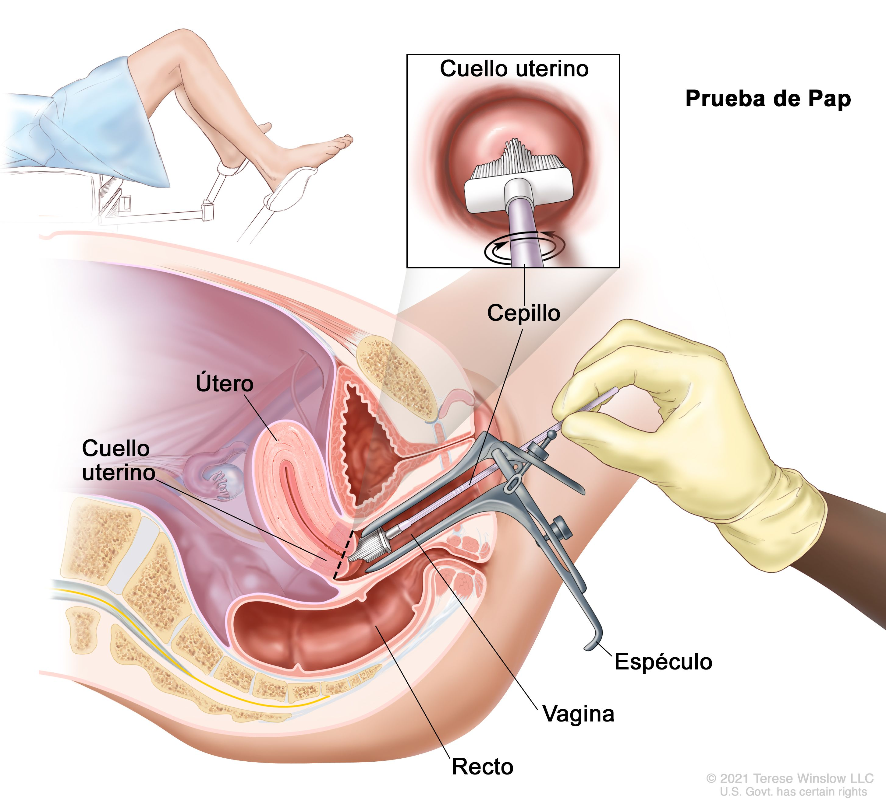
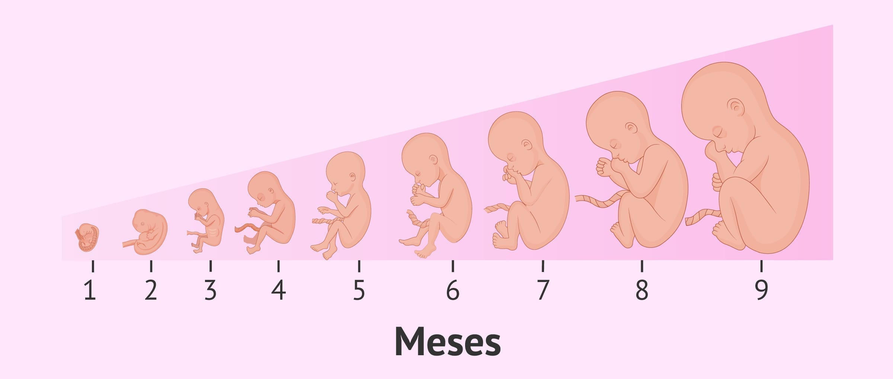

Dra. Yanet Aranda
Ginecóloga en Tuxtla Gutiérrez, Chiapas
Acompañamos a la mujer en cada etapa de su vida, ofreciendo diagnóstico, prevención y tratamiento con tecnología moderna y un enfoque humano.
Agendar cita
Sobre la doctora
La Dra. Yanet Aranda es especialista en Ginecología y Obstetricia con más de 20 años de experiencia en salud femenina.
Su práctica se centra en la atención integral, la prevención y el acompañamiento personalizado. Ofrece consulta en su consultorio médico privado.
Trayectoria académica
Se formó como Médico Cirujano en la Universidad Autónoma de Guadalajara (UAG) y después realizó la especialidad en Ginecología y Obstetricia avalada por la Universidad Nacional Autónoma de México (UNAM).
Cuenta con formación adicional en laparoscopia, colposcopia, detección de enfermedades de mama y procedimientos con láser CO2.

Nuestros servicios
Atención integral para el bienestar y la salud de la mujer.
Galería
Conoce nuestros espacios y nuestra atención médica.



Fotografía 1 de 3
Testimonios
La confianza de nuestras pacientes es nuestra mejor recomendación.
"La doctora brinda una atención muy profesional, amable y hace que te sientas en confianza desde la primera consulta".
Grendy M."Me gustó mucho la consulta, te explica todo de manera detallada y su trato es muy humano".
A. G."Excelente, muy amable, desde un inicio me escuchó y explicó claramente mi diagnóstico, resolviendo todas mis dudas".
Jennifer S.Preguntas frecuentes
Resolvemos algunas de tus dudas antes de la consulta.
¿Cómo puedo agendar una cita?
Puedes solicitar tu cita mediante Doctoralia, WhatsApp o comunicarte por teléfono con nuestro consultorio.
¿Dónde se encuentra el consultorio?
Nos encontramos en Cerrada Primavera #145, Colonia La Salle (Frente a Farmacia Guadalajara), Tuxtla Gutierrez, Chiapas.
¿Qué debo llevar a mi primera consulta?
Puedes llevar tus estudios médicos anteriores, recetas y una lista de los medicamentos que utilizas.
¿Se realizan ultrasonidos?
Sí, se ofrecen estudios de ultrasonido como parte de los servicios ginecológicos y obstétricos.
¿Qué métodos anticonceptivos ofrecen?
Se ofrece orientación, valoración y colocación de diferentes métodos, incluidos implantes subdérmicos y dispositivos intrauterinos.
Tu salud merece atención especializada
Agenda una consulta y recibe una valoración integral en un ambiente seguro y confidencial.
Enviar WhatsAppUbicación
Visítanos en nuestro consultorio.
Dirección
Cerrada Primavera #145, Colonia La Salle (Frente Farmacia Guadalajara), Tuxtla Gutierrez, Chiapas. CP 29070
Horario de atención
Lunes a viernes:
10:00 AM - 1:00 PM
5:00 PM - 7:00 PM
Sábado:
10:00 AM - 1:00 PM